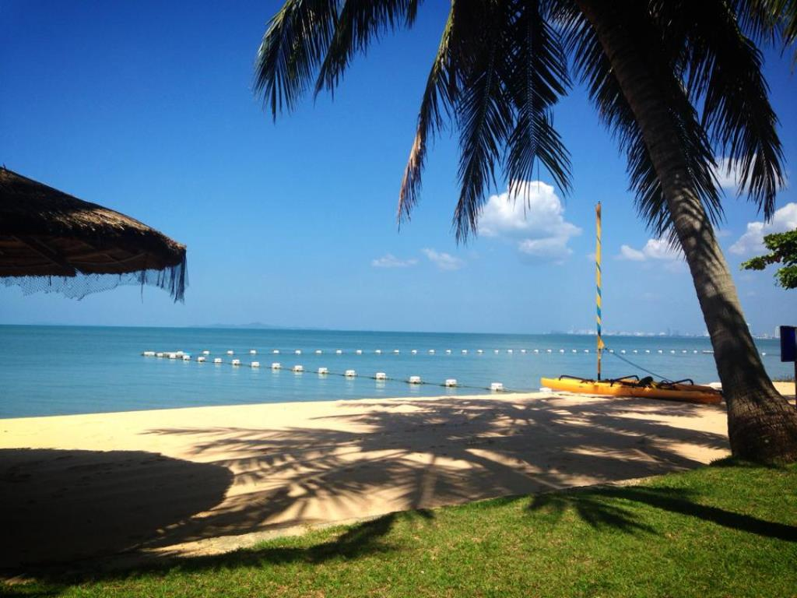
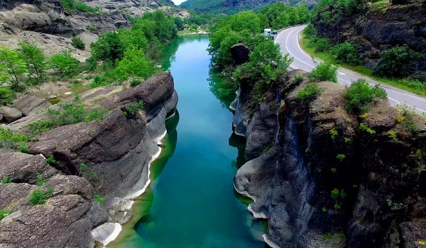
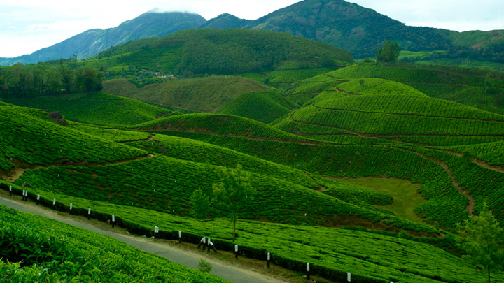
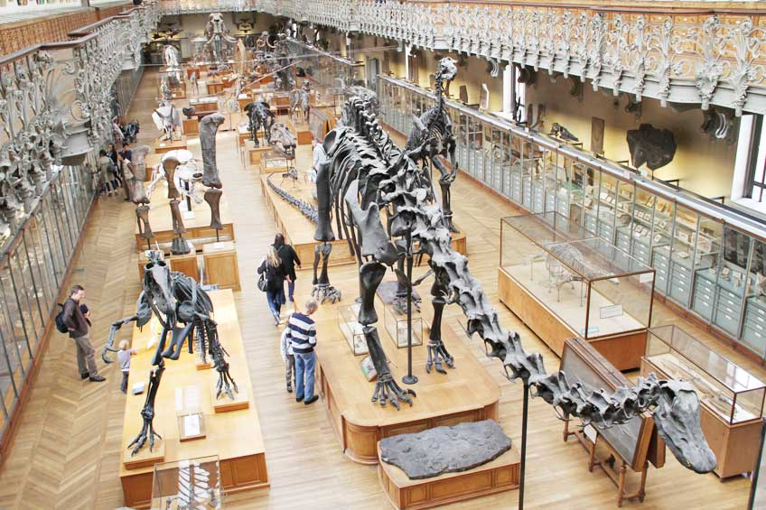

<!--
  Generated template for the PlacelistPage page.

  See http://ionicframework.com/docs/components/#navigation for more info on
  Ionic pages and navigation.
-->
<ion-header>

  <ion-navbar>
    <ion-title>placelist</ion-title>
  </ion-navbar>

</ion-header>


<ion-content padding>
  <ion-list>
    <ion-item>
      <ion-thumbnail item-start>
        
      </ion-thumbnail>
      <h2>ทะเลภูเก็ต</h2>
      <p>อยู่ในจังหวัดภูเก็ต</p>
      <button ion-button clear item-end (click)="goPageDetail()">View</button>
    </ion-item>
    <ion-item>
      <ion-thumbnail item-start>
        
      </ion-thumbnail>
      <h2>แม่น้ำมูล</h2>
      <p>ไหลจากโคราชสู่แม่น้ำโขง</p>
      <button ion-button clear item-end (click)="goPageDetail()">View</button>
    </ion-item>
    <ion-item>
      <ion-thumbnail item-start>
        
      </ion-thumbnail>
      <h2>ดอยสุกี้</h2>
      <p>ปลูกใบชามากมาย ดีจัง</p>
      <button ion-button clear item-end (click)="goPageDetail()">View</button>
    </ion-item>
    <ion-item>
      <ion-thumbnail item-start>
        
      </ion-thumbnail>
      <h2>พิพิธภัณฑ์ ดูกยัก</h2>
      <p>มีกระดูกจิ้งจกยักหลายตัว</p>
      <button ion-button clear item-end (click)="goPageDetail()">View</button>
    </ion-item>
  </ion-list>
</ion-content>